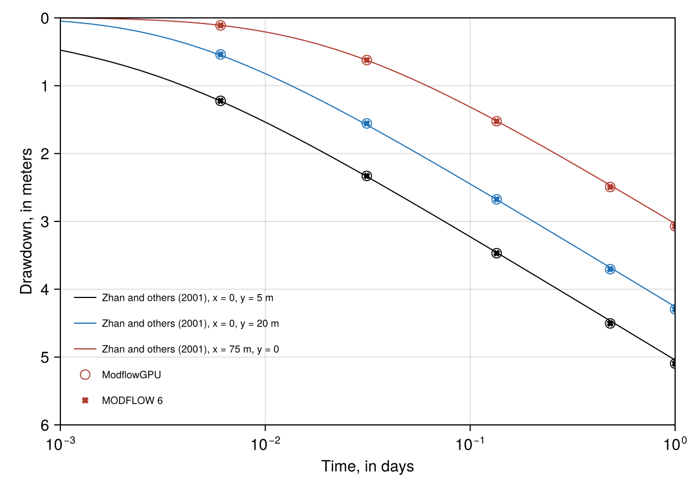
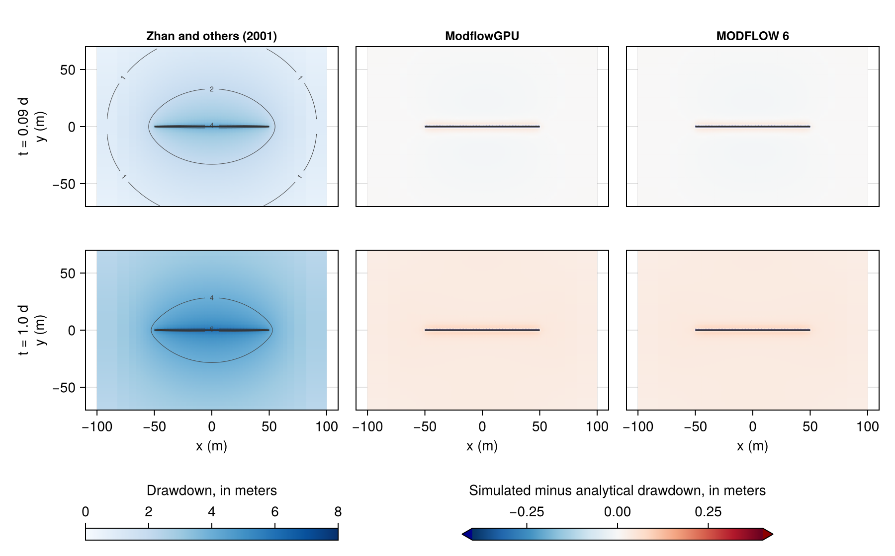
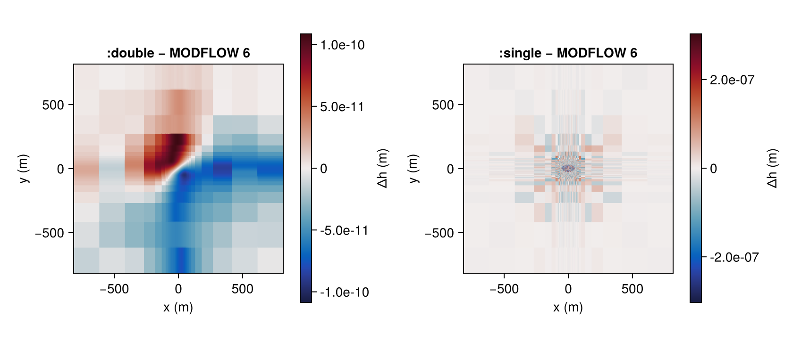

A horizontal well in an anisotropic aquifer
A horizontal well, screened over 100 m at mid-depth of a confined aquifer 10 m thick (horizontal conductivity 10 m/d, vertical 1 m/d), pumps 1000 m³/d for one day. The drawdown of such a well is not radial; Zhan and others (2001) give the analytical solution for a uniform-flux line sink between no-flow top and bottom boundaries. The model has 11 layers of 118 × 118 cells, 1.25 m wide near the well and wider towards the edges, 153 164 cells in all, and 60 time steps. Units are metres and days.
The MODFLOW 6 example ex-gwf-hwell represents the well in two ways: as wells (WEL) in the cells along the screen, each with an equal share of the rate (ex-gwf-hwell-a, this page), and as one multi-aquifer well (MAW, -b), which ModflowGPU does not support (out of scope, see Supported packages). Its figures also show results of MODFLOW-USG, which are not redrawn here.
Input and the MODFLOW 6 run
ExampleTools (docs/ExampleTools.jl in the repository) takes the input from the released mf6examples.zip, sets the tight closures of the parity tests in the IMS file, and runs MODFLOW 6.8.2.
using ModflowGPU, CairoMakie
mf6 = example_run("ex-gwf-hwell/ex-gwf-hwell-a")
mf6.mode, mf6.mf6_time("tight", 204.926795084)The ModflowGPU run
In :double and in :single precision on the CPU, with the AMG preconditioner: in :single, BiCGSTAB with the Jacobi preconditioner does not converge on this model, and with AMG both presets run faster on the CPU (the parity tests use AMG too).
runs = Dict(p => run_modflowgpu(mf6.dir, p; preconditioner = :amg) for p in (:double, :single))
r = runs[:double].result
r.convergedtrueThe analytical solution
Zhan and others (2001), equation 23, as in the MF6 example: the drawdown at (x, y, z) and time t for a well of length L at elevation z_w along the x axis, in an aquifer of thickness b with conductivities K (horizontal) and K_z (vertical) and specific storage S_s, in dimensionless form (a = √(K_z / K)):
\[s = \frac{Q}{2\pi K b}\,\frac{\sqrt{\pi}}{2 L_D}\int_0^{t_D} \left[\operatorname{erf}\frac{L_D/2 + x_D}{2\sqrt{\tau}} + \operatorname{erf}\frac{L_D/2 - x_D}{2\sqrt{\tau}}\right] \frac{e^{-y_D^2 / 4\tau}}{\sqrt{\tau}} \left[1 + 2\sum_{n=1}^{200} \cos(n\pi z_D)\cos(n\pi z_{wD})\, e^{-n^2\pi^2\tau}\right] d\tau\]
with x_D = a x / b, y_D = a y / b, z_D = z / b, L_D = a L / b, z_{wD} = z_w / b and t_D = K_z t / (S_s b²). The integral is evaluated with Simpson's rule over log τ, and erf with its Taylor series (|x| < 3) or its asymptotic expansion.
const K, KZ, SS, B, Q, L, ZW, STRT = 10.0, 1.0, 1.0e-4, 10.0, 1000.0, 100.0, 5.0, 50.0
function erf_(x)
ax = abs(x)
if ax < 3
s, term, n = 0.0, ax, 0
while abs(term) > 1.0e-17 * max(abs(s), 1.0e-300) || n < 2
s += term / (2n + 1)
n += 1
term *= -ax^2 / n
end
v = 2 / sqrt(π) * s
else
x2, t, s = ax^2, 1.0, 1.0
for k in 1:8
t *= -(2k - 1) / (2x2)
s += t
end
v = 1 - exp(-x2) / (ax * sqrt(π)) * s
end
return copysign(v, x)
end
"Drawdown (m) at the points `(x[i], y[i])`, elevation `z`, time `t` (days)."
function zhan_drawdown(xs, ys, z, t; npts = 1200)
a = sqrt(KZ / K)
ld, zd, zwd, td = L / B * a, z / B, ZW / B, KZ * t / (SS * B^2)
v = range(log(1.0e-14), log(td); length = 2npts + 1)
τ = exp.(v)
w = [i == 1 || i == length(v) ? 1.0 : (iseven(i) ? 4.0 : 2.0) for i in eachindex(v)] .* (step(v) / 3)
series = [1 + 2 * sum(cos(n * π * zd) * cos(n * π * zwd) * exp(-n^2 * π^2 * s) for n in 1:200) for s in τ]
pre = w .* sqrt.(τ) .* series # dτ = τ dv, and 1/√τ
return map(xs, ys) do x, y
xd, yd = x / B * a, y / B * a
acc = 0.0
for i in eachindex(τ)
r = 2 * sqrt(τ[i])
acc += pre[i] * (erf_((ld / 2 + xd) / r) + erf_((ld / 2 - xd) / r)) * exp(-yd^2 / (4τ[i]))
end
sqrt(π) / (2ld) * acc * Q / (2π * K * B)
end
endzhan_drawdown (generic function with 1 method)Drawdown at three points
The drawdown in the layer of the well at 5 m and 20 m from the middle of the screen (perpendicular to the well) and at 75 m along its axis (25 m beyond its end), against time: the analytical solution (lines), ModflowGPU (circles) and MODFLOW 6 (crosses) on the same input, as in the left panel of the MF6 example's figure (which shows the MAW and MODFLOW-USG results instead of a second WEL run).
g = read_dis_grid(mf6.dir)
zc = [(g.botm[1, 1, l] + (l == 1 ? g.top[1, 1] : g.botm[1, 1, l - 1])) / 2 for l in 1:g.nlay]
kwell = argmin(abs.(zc .- ZW))
screen = budget_cells(g, r.budget_file, "WEL")
iwell = only(unique(c[2] for c in screen))
ywell = g.yc[iwell]
xcenters, ycenters = g.xc, reverse(g.yc)
hf, hf6 = open_head_file(r.head_file), open_head_file(only(filter(endswith(".hds"), readdir(mf6.dir; join = true))))
t = ModflowGPU.head_times(hf)
obs = [(0.0, 5.0, "x = 0, y = 5 m"), (0.0, 20.0, "x = 0, y = 20 m"), (75.0, 0.0, "x = 75 m, y = 0")]
colors = (:black, RGBf(0.12, 0.44, 0.71), RGBf(0.69, 0.23, 0.18))
marks = [8, 20, 31, 40, 48, 55, 59] .+ 1
fig = Figure(; size = (620, 440))
ax = Axis(fig[1, 1]; xscale = log10, xlabel = "Time, in days", ylabel = "Drawdown, in meters", yreversed = true)
for (n, (x, y, label)) in enumerate(obs)
i, j = argmin(abs.(ycenters .- y)), argmin(abs.(xcenters .- x)) # as the MF6 example
exact = [only(zhan_drawdown([xcenters[j]], [g.yc[i] - ywell], zc[kwell], tk)) for tk in t]
lines!(ax, t, exact; color = colors[n], linewidth = 1, label = "Zhan and others (2001), $label")
for (file, marker, size, lab) in ((hf, :circle, 12, "ModflowGPU"), (hf6, :xcross, 7, "MODFLOW 6"))
s = [STRT - read_head(file, k)[j, i, kwell] for k in marks]
scatter!(ax, t[marks], s; marker, color = marker === :circle ? :transparent : colors[n], strokecolor = colors[n], strokewidth = 0.9, markersize = size, label = n == 3 ? lab : nothing)
end
end
limits!(ax, 1.0e-3, 1.0, 6.0, 0.0)
axislegend(ax; position = :lb, labelsize = 9, framevisible = false)
save_figure(fig, "ex-gwf-hwell-comparison")
Drawdown maps
The drawdown in the layer of the well near the screen at t ≈ 0.1 d and t = 1 d: the analytical solution with contours at 0.25, 0.5, 1, 2, 4 and 6 m, and the simulated drawdown minus the analytical one, for ModflowGPU and for MODFLOW 6, as in the MF6 example (which shows the MAW and MODFLOW-USG results as well). The differences are largest next to the screen, where the cells cannot resolve the steep gradient of the line sink.
cols = findall(x -> abs(x) <= 110, g.xc)
rows = findall(y -> abs(y - ywell) <= 70, g.yc)
steps = [argmin(abs.(t .- tm)) for tm in (0.1, 1.0)]
xs, ys = g.xc[cols], g.yc[rows] .- ywell
xe, ye = g.xe[first(cols):(last(cols) + 1)], reverse(g.ye[first(rows):(last(rows) + 1)] .- ywell)
fig = Figure(; size = (900, 560))
hms = Dict{Bool, Any}()
for (rr, k) in enumerate(steps)
exact = reshape(zhan_drawdown(repeat(xs, length(ys)), repeat(ys; inner = length(xs)), zc[kwell], t[k]), length(xs), length(ys))
panels = [
("Zhan and others (2001)", exact, true),
("ModflowGPU", (STRT .- read_head(hf, k)[cols, rows, kwell]) .- exact, false),
("MODFLOW 6", (STRT .- read_head(hf6, k)[cols, rows, kwell]) .- exact, false),
]
for (cc, (label, v, isdd)) in enumerate(panels)
local ax = Axis(fig[rr, cc]; aspect = DataAspect(), title = rr == 1 ? label : "", titlesize = 12, ylabel = cc == 1 ? "t = $(round(t[k]; digits = 2)) d\ny (m)" : "", xlabel = rr == 2 ? "x (m)" : "")
if isdd
hms[true] = heatmap!(ax, xe, ye, v[:, end:-1:1]; colormap = :Blues, colorrange = (0, 8))
contour!(ax, xs, reverse(ys), v[:, end:-1:1]; levels = [0.25, 0.5, 1, 2, 4, 6], color = RGBf(0.25, 0.25, 0.25), linewidth = 0.5, labels = true, labelsize = 7)
else
hms[false] = heatmap!(ax, xe, ye, v[:, end:-1:1]; colormap = Reverse(:RdBu), colorrange = (-0.4, 0.4), highclip = :darkred, lowclip = :darkblue)
end
lines!(ax, [-L / 2, L / 2], [0, 0]; color = RGBf(0.2, 0.2, 0.2), linewidth = 1.5)
limits!(ax, -110, 110, -70, 70)
rr == 1 && hidexdecorations!(ax; grid = false)
cc > 1 && hideydecorations!(ax; grid = false)
end
end
Colorbar(fig[3, 1], hms[true]; vertical = false, label = "Drawdown, in meters")
Colorbar(fig[3, 2:3], hms[false]; vertical = false, label = "Simulated minus analytical drawdown, in meters", width = Relative(0.6))
save_figure(fig, "ex-gwf-hwell-maps")
Comparison with MODFLOW 6
The head differences between ModflowGPU and MODFLOW 6 in the layer of the well at the end of the run, in both precisions.
h6 = read_head(hf6, length(hf6))
d = [":$p − MODFLOW 6" => (hp = open_head_file(runs[p].result.head_file); read_head(hp, length(hp))) .- h6 for p in (:double, :single)]
save_figure(difference_map(g, d; layer = kwell, unit = "m", xlabel = "x (m)", ylabel = "y (m)"), "ex-gwf-hwell-difference")
The largest head and budget differences over all time steps and layers, next to the values of the parity table, and the wall times (CPU: this build, including compilation for the first run of the session; GPU: the parity table, AMD Radeon RX 7800 XT).
stats = Dict(p => (; cmp = compare_with_mf6(mf6.dir, runs[p]), runs[p].time) for p in (:double, :single))
comparison_table("ex-gwf-hwell-a", stats)| Preset | max |Δh| (m), this build | max |Δh| (m), parity table | Budget, this build | Budget, parity table | CPU time, this build (s) | GPU time, parity table (s) |
|---|---|---|---|---|---|---|
:double | 9.0e-10 | 9.0e-10 | 9.0e-12 | 9.0e-12 | 41.97 | 12.27 |
:single | 3.0e-07 | 3.0e-07 | 1.8e-07 | 1.7e-07 | 33.39 | 8.79 |
Budget: the largest difference of a budget-file flow or a listing-table rate, relative to the total inflow of its time step.